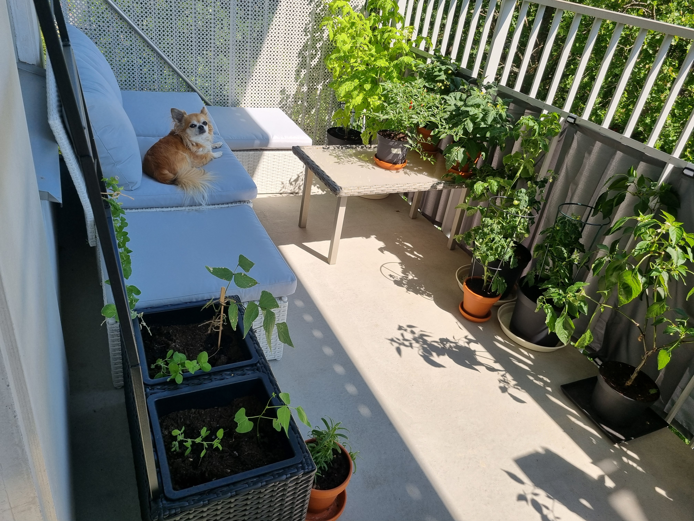

SYFTE
Syftet med bloggen, Apr 13, 2026

Jag har alltid gillat att odla, det har funnits runt omkring mig i uppväxten och många i familjen odlar. Odling är spännande, roligt och givande på så många plan. En hobby som grundar en i nuet, här och nu, ger en något att äta och så mycket mer. Det finns inget så magiskt som att skörda egenodlade örter till maten, en färsk tomat på frukostmackan eller att se den första chiliblomman slå ut.
Listan är lång över hur odling får mig och så många andra att må och känna. Det är även ett bra sätt för att få förståelse för var viss mat kommer ifrån och hur lång tid det tar att odla. Väldigt insiktsfullt och lärorikt för både vuxna och barn. Det är även ett bra sätt att vara mer omtänksam mot miljön, istället för att köpa sockerärtor i affären som odlats i exempelvis Peru eller Kenya*, kan du skörda dem på din egen balkong. Eller om något inte finns att köpa eller alltid ser så trist ut i affären så kan man odla det själv. Eller i alla fall försöka.
De senaste åren har min syn på odling av frukt och grönt ändrats, framförallt synen på industriell odling. Mycket av detta efter att jag lyssnat på en pod-dokumentär i tre delar: I tomaternas skugga. Den finns på spotify att lyssna på för den som vill. Detta är inget samarbete utan något som påverkade mig på djupet och fick mig att riktigt fundera på vad de grönsaker jag äter och köper innehåller och hur de har odlats. Även hur naturen påverkas i de områden där de odlats, hur arbetarna och deras barn har det, hur odling och kontroller av odling ofta har en hel del korruption kopplat tills sig osv. En riktigt ögonöppnare.
Detta i sin tur fick mig att fundera på vad kan man egentligen odla i hemmet? På sin balkong, i fönstret eller på köksbänken. Vad är möjligt, hur mycket skörd kan man få, hur mycket arbete är det till vilken mängd skörd? Istället för att svämma över min privata instagram med odlingsinnehåll så skapade jag EnBalkongodling i januari 2021. Den är öppen, där jag kan dela mitt odlande, så vem som helst kan se och följa. Kanske hjälper eller inspirerar det någon? Det är även en bra plattform för att komma i kontakt med andra odlare.
* Sockerärtor Klass 1, Hemköps sortment online 2026-04-13